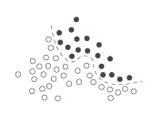
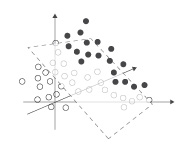

pattern.vector
The pattern.vector module contains tools to count words in a "document" (e.g., a paragraph or a web page) and compute tf-idf, cosine similarity and latent semantic analysis to discover keywords, search & compare similar documents, cluster documents into groups, or to make predictions about other documents.
It can be used by itself or with other pattern modules: web | db | en | search | vector | graph.

Documentation
- Word count
- TF-IDF
- Document
- Corpus
- Latent Semantic Analysis
- Clustering (k-means, hierarchical)
- Classification (naive bayes, knn, svm)
Word count
One way to measure the importance of a word in a text is by counting the number of times each word appears in the text (called term frequency). Different texts can then be compared. If a word appears frequently in many texts (document frequency) its importance diminishes. For example, if the word important occurs in many texts, it is not particularly important / unique / relevant.
The words() and count() functions can be used to count words in a given string:
words(string, filter = lambda w: w.isalpha() and len(w) > 1, punctuation = '[]():;,.!?\n\r\t\f ')
count(
words = [],
top = None, # Filter words not in the top most frequent.
threshold = 0, # Filter words whose count falls below threshold.
stemmer = None, # PORTER | LEMMA | function | None
exclude = [], # Filter words in the exclude list.
stopwords = False) # Include stop words?
- words() returns a list of words by splitting the string on spaces.
Punctuation is stripped from words. If filter(word) yields False, the word is excluded. - count() takes a list of words and returns a dictionary of (word, count)-items.
Stop words & stemming
Stop words (see pattern/vector/stopwords.txt) are words that are so common (e.g. each, his, very) that they are ignored in count() unless parameter stopwords is set to True. There is no definite list of stop words, so you may need to tweak it to your own needs.
The count() function calls stem() to normalize words. For example with PORTER (Porter2 stemming algorithm), consisted and consistently are stemmed to consist. This may not always leave a real word, for example: spies is stemmed to spi. The stemmer can also be set to LEMMA. It will then call pattern.en.singularize() to guess the base form of a word, or use the word's lemma if a Word object is given. Word objects can be retrieved from a parser (pattern.en.parser or MBSP). This is slower than using PORTER.
stem(word, stemmer=PORTER)
>>> from pattern.vector import stem
>>> print stem('spies', stemmer=PORTER)
>>> print stem('spies', stemmer=LEMMA)
spi
spy>>> from pattern.vector import words, count, PORTER
>>> s = 'The black cat was spying on the white cat.'
>>> print count(words(s), stemmer=PORTER)
{u'spi': 1, u'white': 1, u'black': 1, u'cat': 2}>>> from pattern.vector import count, LEMMA
>>> from pattern.en import parse, Sentence
>>> s = 'The black cat was spying on the white cat.'
>>> s = Sentence(parse(s, lemmata=True))
>>> print count(s, stemmer=LEMMA)
{u'spy': 1, u'white': 1, u'black': 1, u'cat': 2}
Term frequency – inverse document frequency
Term frequency (tf) measures a word's relevancy in a single text. Document frequency (df) measures a word's overall relevancy across documents. Dividing tf by df yields tf-idf, a simple and elegant measurement of a word's uniqueness in a text when compared to other texts. For example, this can be used in a search engine to rank documents given a user query.
| Metric | Description |
| tf | number of occurences of a word / number of words in document |
| df | number of documents containing a word / number of documents |
| idf | log(1/df) |
| tf-idf | tf * idf |
The list of all relevancy values (i.e. tf-idf) of the words in a document is called the document vector. Multiple documents bundled in a corpus form a vector space. By calculating the matrix dot product (= angle) of two document vectors, the similarity of the two documents can be measured. This is called cosine similarity. For v = Corpus.vector():
cos = dot(v(doc1), v(doc2)) / (v(doc1).norm * v(doc2).norm)
Document
A Document bundles the words(), stem() and count() functions with methods to determine which words are more important. The given string can also be a Text, a Sentence, a list of words, or a dictionary of (word, count)-items. Documents can be grouped in a Corpus to compute tf-idf and similarity.
document = Document(string, filter = lambda w: w.isalpha() and len(w) > 1, punctuation = '[]():;,.!?\n\r\t\f ', top = None, # Filter words not in the top most frequent. threshold = 0, # Filter words whose count falls below threshold. stemmer = None, # STEMMER | LEMMA | function | None. exclude = [], # Filter words in the exclude list. stopwords = False, # Include stop words? name = None, type = None)
document = Document.open(path, *args, **kwargs, encoding='utf-8')
document.id # Unique number (read-only). document.name # Unique name, or None, used in Corpus.document(). document.type # Document type, used with classifiers. document.corpus # The parent Corpus, or None. document.terms # Dictionary of (word, count)-items (read-only). document.count # Total word count. document.vector # Cached tf-idf vector (read-only dict).
document.tf(word) document.tfidf(word) # Note: simply yields tf if corpus is None. document.keywords(top=10, normalized=True)
document.copy()
- Document.open() reads the given text file. It takes the same arguments as the constructor.
- Document.tf() returns the frequency of a word as a number between 0.0-1.0.
- Document.tfidf() returns the word's relevancy as tf-idf.
- Document.keywords() returns a sorted list of (tf-idf, word)-tuples.
With normalized=True relevancy values will be between 0.0-1.0 (their sum is 1.0).
For example:
>>> from pattern.vector import Document >>> s = ''' >>> The shuttle Discovery, already delayed three times by technical problems >>> and bad weather, was grounded again Friday, this time by a potentially >>> dangerous gaseous hydrogen leak in a vent line attached to the shipʼs >>> external tank. The Discovery was initially scheduled to make its 39th >>> and final flight last Monday, bearing fresh supplies and an intelligent >>> robot for the International Space Station. But complications delayed the >>> flight from Monday to Friday, when the hydrogen leak led NASA to conclude >>> that the shuttle would not be ready to launch before its flight window >>> closed this Monday. >>> ''' >>> d = Document(s) >>> print d.keywords(top=6) [(0.15, u'flight'), (0.15, u'monday'), (0.10, u'delay'), (0.10, u'discovery'), (0.10, u'friday'), (0.10, u'hydrogen') ]
Document vector
Document.vector is a sparse dictionary of (word, tf-idf)-items cached for performance. It has a Vector.norm attribute that yields the L2-norm, used when calculating cosine similarity between documents:
l2 = sum([w**2 for w in Document.vector.values()])**0.5
Corpus
A Corpus is a collection of Document objects:
corpus = Corpus(documents=[], weight=TFIDF)
corpus = Corpus.build(path, *args, **kwargs)
corpus = Corpus.load(path) # Imports file created with Corpus.save().
corpus.documents # List of Documents (read-only). corpus.document(name) # Yields document with given name (unique). corpus.vector(document) # Vector with all words from all documents. corpus.vectors # List of all document vectors. corpus.weight # TF-IDF | TF (weight used for vectors). corpus.density # Overall word coverage (0.0-1.0). corpus.lsa # Concept space, set with Corpus.reduce().
corpus.append(document) corpus.remove(document) corpus.extend(documents) corpus.clear()
corpus.df(document) corpus.idf(document) corpus.similarity(document1, document2) corpus.neighbors(document, top=10) corpus.search(words=[], **kwargs) corpus.distance(document1, document2, method=COSINE) # COSINE | EUCLIDEAN | MANHATTAN corpus.cluster(documents=ALL, method=KMEANS) # KMEANS | HIERARCHICAL corpus.reduce(dimensions=NORM) # NORM | TOP300 | int
corpus.relative_entropy(word1, word2) # Kullback-Leibler divergence. corpus.feature_selection(top=100, method=KLD) # Top original features (terms). corpus.filter(features=[]) # Corpus with selected features.
corpus.sets(threshold=0.5) # Frequent word sets.
corpus.save(path, update=False) corpus.export(path, format=ORANGE) # ORANGE | WEKA
- Corpus.vector() returns a Vector for the given document.
Vector contains all words in the corpus, with tf-idf > 0 for words that appear in the document. - Corpus.df() returns document frequency of a word as a value between 0.0-1.0.
- Corpus.idf() returns the inverse document frequency (or None if the word is not in the corpus).
- Corpus.similarity() returns the cosine similarity of two Documents between 0.0-1.0.
- Corpus.neighbors() returns a sorted list of (similarity, Document)-tuples.
- Corpus.search() returns a sorted list of (similarity, Document)-tuples, based on a list of query words. A Document is created on-the-fly for the given words, using the given optional arguments.
- Corpus.sets() returns a dictionary of (set(words), frequency)-items of word combinations with a relative frequency above the given threshold (0.0-1.0).
The example below demonstrates the use of tf-idf and cosine similarity:
>>> from pattern.vector import Document, Corpus
>>> d1 = Document('A tiger is a big yellow cat with stripes.')
>>> d2 = Document('A lion is a big yellow cat with manes.')
>>> d3 = Document('An elephant is a big grey animal with a slurf.')
>>> print d1.vector
>>>
>>> corpus = Corpus(documents=[d1,d2,d3])
>>> print d1.vector
>>> print
>>> print corpus.similarity(d1,d2) # tiger vs. lion
>>> print corpus.similarity(d1,d3) # tiger vs. elephant
{u'tiger': 0.25, u'stripes': 0.25, u'yellow': 0.25, u'cat': 0.25}
{u'tiger': 0.27, u'stripes': 0.27, u'yellow': 0.10, u'cat': 0.10}
0.12
0.0
We create documents for tiger, lion and elephant. The first time tiger's vector is printed, all the values are equal (each keyword has the same frequency, tf). However, when we group the documents in a corpus the values of keywords yellow and cat diminish because they also appear in the lion document (tf-idf).
When we compare tiger to lion and elephant, the values indicate that tiger is more similar to lion. Their similarity is still quite low, only 12%. This is because in this (theoretical) example two-thirds of the documents (tiger and lion) share most of their keywords. If we continue to add documents for other animals (e.g. "A squirrel is a small rodent with a tail.") the similarity will rise. In many experiments you will need lots of documents, for example 10,000 – often with a 1,000 or more relevant words per document. More data processed = more accurate similarity.
Corpus import, export, cache
- Corpus.build() returns a new Corpus from the text files at the given path (e.g. path='folder/*.txt"). Each file is one Document. The Document.name can be set using the optional name parameter, which is a function that takes the filename and returns a document name. The command furthermore takes the same optional arguments as the Document constructor.
- Corpus.save() exports the corpus as a binary file using the Python cPickle module – including the cache of document vectors and cosine similarity values. Whenever Document.vector or Corpus.similarity() is called the calculations are cached for performance. With update=True, caches all possible vectors and similarities before exporting.
- Corpus.load() returns a Corpus from the given file created with Corpus.save(). Since words are already stemmed, and previously cached calculations can be reused, this is faster than Corpus.build().
- Corpus.export() exports the corpus as a file that can be used as input for popular machine learning software. With ORANGE it generates a tab-separated text file for Orange, with WEKA it generates an ARFF text file for Weka.
Note that when a document is added to or removed from the corpus, the entire cache is cleared (since new words will change the tf-idf values).
If you need to add a lot of documents (e.g., 10,000+), use Document.extend() for performance. Collect the documents in batch lists of, say, a 1,000, and then extend the corpus.
Latent semantic analysis
Latent Semantic Analysis (LSA) is a statistical machine learning method based on singular value decomposition (SVD). [1] [2] Related terms in the corpus are grouped into "concepts". Documents then get a concept vector that is an approximation of their original vector – with reduced dimensionality so that cosine similarity, clustering and classification can run faster.
SVD requires the Python NumPy package (installed by default on Mac OS X). Given a matrix with document rows and term columns, SVD yields matrix U with document rows and concept columns, diagonal matrix Σ with singular values, and matrix Vt with concept rows and term columns:
from numpy import diag, dot
from numpy.linalg import svd
u, sigma, vt = svd(matrix, full_matrices=False)
for i in range(-k,0):
sigma[i] = 0 # Reduce k smallest singular values.
matrix = dot(u, dot(diag(sigma), vt))Reference: Wilk J. (2007). http://blog.josephwilk.net/projects/latent-semantic-analysis-in-python.html
|
|
LSA concept space
The Corpus.reduce() method calculates SVD and stores the concept space as Corpus.lsa. Its parameter dimensions sets the number of dimensions in the concept space (see further).
The Corpus.similarity(), Corpus.neighbors(), Corpus.search() and Corpus.cluster() methods will then compute in LSA concept space. Set Corpus.lsa to None at any time to undo the reduction. Adding or removing documents in the corpus will undo the reduction as well.
lsa = LSA(corpus, k=NORM)
lsa.corpus # Parent Corpus.
lsa.terms # List of words, same as Corpus.vector.keys().
lsa.concepts # List of concepts, each a dictionary {word: weight}
lsa.vectors # Dictionary {Document.id: {concept_index: weight}}lsa.transform(document)
LSA.transform() takes a Document and returns its Vector in concept space. This is useful for loose documents that are not in the corpus – see kNN.classify().
The example below shows how terms become semantically related after LSA:
>>> D1 = Document("The cat purrs.", name="cat1")
>>> D2 = Document("Curiosity killed the cat.", name="cat2")
>>> D3 = Document("The dog wags his tail.", name="dog1")
>>> D4 = Document("The dog is happy.", name="dog2")
>>> corpus = Corpus([D1, D2, D3, D4])
>>> corpus.reduce(2)
>>>
>>> for document in corpus:
>>> print
>>> print document.name
>>> for concept, w1 in corpus.lsa.vectors[document.id].items():
>>> for word, w2 in corpus.lsa.concepts[concept].items():
>>> if w1 != 0 and w2 != 0:
>>> print (word, w1 * w2)
The corpus is reduced to two dimensions, so there are two concepts in the concept space and each document has a weight for each concept. As illustrated below, the cat features have been grouped together and the dog features have been grouped together.
| concept | cat | curiosity | dog | happy | killed | purrs | tail | wags |
| 0 | +0.00 | +0.00 | +0.52 | +0.78 | +0.00 | +0.00 | +0.26 | +0.26 |
| 1 | -0.52 | -0.26 | +0.00 | +0.00 | -0.26 | -0.78 | +0.00 | +0.00 |
| concept | d1 | d2 | d3 | d4 |
| 0 | +0.00 | +0.00 | +0.45 | +0.90 |
| 1 | -0.90 | -0.45 | +0.00 | +0.00 |
LSA dimension reduction
Dimension reduction is useful for clustering: 3,000 documents with 1,000-term vectors are intractable [3] in a pure-Python clustering algorithm. However, reducing the corpus to 100-concept vectors allows you to run through k-means clustering in a couple of minutes. The main difficulty is tweaking the dimensions parameter in Corpus.reduce(). Different values produce different results. A value that is too high results in noise. A value that is too low removes important semantical meaning.
Possible options for parameter dimensions:
- NORM: uses L2-norm of the singular values as the number of dimensions to remove,
- TOP300: keeps the top 300 dimensions,
- function: user-defined function, takes the list of singular values and returns an int,
- int: the number of dimensions in the concept space.
Note: document vectors are stored in a sparse format (i.e., terms for which a document scores 0 are excluded). This means that even if the corpus has a 1,000 terms, each document may have no more than 5-10 terms (= a sparse corpus). A sparse corpus usually clusters faster than a reduced corpus. To get an idea of the average vector length:
sum(len(d.vector) for d in corpus.documents) / float(len(corpus))
Clustering
If the Document.type of each document in the corpus is known, you can do interesting things with it – for example, build a classifier for uncategorized documents. If the type is unknown, you can cluster documents into semantically related categories using unsupervised machine learning methods.
As a metaphor, suppose you have a number of points with (x, y) coordinates (horizontal and vertical position). You could group the points into two sets according to their distance to two arbitrary points (or centroids). More centroids create more sets. The principle holds for points in three dimensions (x, y, z) or even points in n dimensions (x, y, z, u, v, ...).
 random points in 2d random points in 2d |
 points by distance to centroid points by distance to centroid |
A Document.vector is an n-dimensional point. For vectors we'll use cosine similarity as a distance metric, so that similar documents are grouped closer together. The pattern.vector module implements two simple clustering algorithms based on this principle:
- K-MEANS: clusters the corpus into k groups. It is quite fast (e.g., 3000 vectors with n=200 and k=100 in about 10 minutes), but it has no guarantee to find the optimal solution, since it starts with random clusters and optimizes (read: swaps elements between clusters) from there.
- HIERARCHICAL: clusters the corpus in a tree: the top level item is a Cluster containing Documents and other Clusters. It is slow (e.g., 3000 vectors with n=6 in about 30 minutes), but the optimal solution is guaranteed since it starts from the bottom up, by clustering the two nearest documents step-by-step.
clusters = Corpus.cluster(documents=ALL, method=KMEANS, k=10, iterations=10)
clusters = Corpus.cluster(documents=ALL, method=HIERARCHICAL, k=1, iterations=1000)
For example:
>>> from pattern.vector import Document, Corpus, HIERARCHICAL
>>> d1 = Document('Cats are independent pets.', name='cat')
>>> d2 = Document('Dogs are trustworthy pets.', name='dog')
>>> d3 = Document('Boxes are made of cardboard.', name='box')
>>> corpus = Corpus((d1, d2, d3))
>>> print corpus.cluster(method=HIERARCHICAL, k=2)
Cluster(
Document(id=3, name='box'), Cluster(
Document(id=2, name='dog'),
Document(id=1, name='cat')))Corpus.cluster() has an optional parameter documents that is a list of documents in the corpus, so you can intermingle k-means and hierarchical clustering on subsets. An optional parameter distance can be EUCLIDEAN, MANHATTAN or COSINE (default).
Faster clustering: k-means++ & triangle inequality
For KMEANS, an optional parameter seed=RANDOM can also be set to KMPP. A weakness of k-means clustering is that it starts out with random clusters. The k-means++ or KMPP algorithm uses a specialized technique to find better starting points. It is also faster.
For KMEANS, an optional parameter p=0.8 sets the relaxation for triangle inequality. This is a speed optimization where p=0.5 is stable but slow, and where p=1.0 may yield small errors but runs a lot faster, especially for higher k and dimensionality. If all of this is still too slow you couls reduce the corpus with LSA (see above).
References:
Arthur, D. (2007). k-means++: the advantage of careful seeding.
Elkan, C. (2007). Using the Triangle Inequality to Accelerate k-Means.
Hierarchical clusters
The KMEANS method returns a list in which each item is a list of semantically related Documents. The HIERARCHICAL method returns a Cluster object, which is a list of Documents and Clusters with some additional properties:
cluster = Cluster([])
cluster.depth # Returns the maximum depth of nested clusters. cluster.flatten(depth=1000) # Returns a flat list, down to the given depth. cluster.traverse(visit=lambda cluster: None)
>>> from pattern.vector import Cluster >>> cluster = Cluster((1, Cluster((2, Cluster((3, 4)))))) >>> print cluster.depth >>> print cluster.flatten(1) 2 [1, 2, Cluster(3, 4)]
Classification
Classification is a supervised machine learning method for assigning a Document to one of a given number of categories (or classes). If you have a corpus in which the Document.type for each document is known, you can use it to predict the type of other ("unknown") documents. For example: a corpus of product reviews (training data), for which the star rating (e.g., ****) of each review is known, can be used to predict the star rating for other product reviews (this is a form of opinion mining).
The pattern.vector module implements three classifiers:
- BAYES: Naive Bayes classifier, based on Bayes' theorem of posterior probability.
- KNN: k-nearest neighbor classifier, predicts a document's type based on the type of its nearest neighbors, i.e., the k top results from Corpus.neighbors().
- SVM: support vector machine, represents documents as points in a high-dimensional space separated by hyperplanes.
classifier = Bayes(aligned=False)
classifier = kNN(k=10, distance=COSINE) # COSINE | EUCLIDEAN | MANHATTAN
classifier = SVM(type=CLASSIFICATION, kernel=LINEAR)
Reference: Magnus Lie Hetland, http://hetland.org/coding/python/nbayes.py
Classifier
The Bayes, kNN and SVM classifiers inherit from the Classifier base class:
classifier = Classifier()
classifier = Classifier.load(path)
classifier.train(document, type=None) classifier.classify(document)
classifier.classes # List of trained types. classifier.features # List of words. classifier.binary # Classifier.classes == [True,False]?
classifier.save(path) # Pickle file, loads fast with Classifier.load()
- Classifier.train() trains the classifier with the given document of the given type.
A document can be a Document or a list of words (strings or other hashable items).
If no type is given, Document.type will be used instead. - Classifier.classify() returns the predicted type for the given document (a Document or a list of words). If the classifier is trained on an LSA-corpus, you need to supply the return value from Corpus.lsa.transform().
For example, say we have mined a large corpus (i.e., 10,000) of movie review titles and the star rating given by the reviewer/customer. The corpus would contain such instances as:
| Review title | Rating |
| Intruiging storyline! | ***** |
| Such a beautiful movie | ***** |
| I don't get the hype...... | *** |
| Incredible, what a heap of rubbish. | * |
We can use it to create a classifier that predicts the rating of other reviews, based on word similarity:
>>> from pattern.vector import Document, Bayes
>>>
>>> b = Bayes()
>>> r = open('reviews.txt').readlines()
>>> r = [x.split(' ') for x in r]
>>> for review, rating in r[:10000]:
>>> b.train(Document(review, type=rating))
>>>
>>> print b.classes
>>> print b.classify(Document('An intriguing movie!'))
['1', '2', '3', '4', '5']
5 Accuracy, precision & recall
Naive Bayes can be quite effective despite its simple implementation. In the above example it has an accuracy of 60%. A random guess between the five possible star ratings would only have a 20% accuracy. Moreover, 25% of the errors are off by only one (e.g., guessed ** instead of ***, or *** instead of **). This results in 75% accuracy for discerning positive (4-5) from negative reviews (1-2). Not bad.
You can test the accuracy with the classmethod Classifier.test(). It creates a new classifier that uses 65% of the documents in the given corpus as training data and 35% as testing data. You can supply a list of Document objects or (wordlist, type)-tuples. The method returns an (accuracy, precision, recall, F1-score)-tuple with values between 0.0-1.0.
Bayes.test(corpus=[], d=0.65, folds=1, aligned=False)
kNN.test(corpus=[], d=0.65, folds=1, k=10, distance=COSINE)
SVM.test(corpus=[], d=0.65, folds=1, type=CLASSIFICATION, kernel=LINEAR)
>>> from pattern.vector import Document, Corpus, Bayes
>>>
>>> corpus = Corpus()
>>> for review in open("reviews.txt").readlines():
>>> review, rating = review.split(' ')
>>> corpus.append(Document(review, type=rating>=4, stemmer=None))
>>>
>>> print Bayes.test(corpus, folds=10)
(0.83, 0.84, 0.96, 0.90) k-fold cross-validation
With the folds parameter > 1, K-fold cross-validation is performed. For example: in 10-fold cross-validation ten separate tests are taken, each using a different 1/10 of the corpus as testing data. This produces reliable results.
Precision & recall
Accuracy is the percentage of correctly classified documents in the test set. Precision & recall are more reliable because they take into account false positives and false negatives – see pattern.metrics for more information. Note: precision, recall and F1-score will be None unless the classifier is binary.
Feature selection
Supervised
It is common for a classifier to stagnate at accurary 50-60%. To make it better, you may need more data. You may also need to fine-tune the training documents. This is called feature selection:
- Enable word lemmatization or stemming (= normalization),
- Raise the word threshold (= noise filtering),
- Exclude or include punctuation marks (e.g., exclamation marks, emoticons),
- Use a domain-specific list of words to exclude (check pattern.en wordlists),
- Use part-of-speech tagging to filter for specific types of words,
- Use aligned=True with Bayes. This will take into account the word index when training on lists of words (i.e., words need to occur at the same position when comparing documents).
You can also supply dictionaries of (word, weight)-items to Classifier.train(). The weight can be word frequency + an additional rating, for example to emphasize words in the review title or the e-mail subject.
Unsupervised
Features (i.e., terms/words) can also be selected automatically using a statistical method. Pattern uses Kullback-Leibler distance (or relative entropy). Corpus.relative_entropy() yields a value indicating how distinct two given features are in the corpus. This value is used in Corpus.feature_selection() to compute a list of the most distinct (or "original") features. Calculating entropy takes some time, but the results are cached and stored with Corpus.save().
Corpus.filter() returns a corpus with only the given features. If you pass the return value from Corpus.feature_selection() you get a new corpus with the top original terms (e.g., 100 vs. 2,500).
f = corpus1.feature_selection(top=100) corpus2 = corpus1.filter(features=f)
Less terms means less computation time. However, there can be a drop in recall (there are less features). However, accuracy scores can also increase since the "noisy" features were removed.
Support vector machine
The most robust classifier is SVM. It relies on the fast libsvm C++ library. Precompiled bindings are included for Windows and Mac OS X 32-bit, and Mac OS X and Ubuntu 64-bit. These may not work on your system. In this case you need to compile the bindings from source (see the instructions in pattern/vector/svm/INSTALL.txt).
The SVM classifier uses kernel functions. The simplest way to divide two clusters of points in 2D is a straight line. If that is not possible, moving the points to a higher dimension (using a kernel function) may make separation easier (using hyperplanes).
| complex in low dimension | simple in higher dimension |
classifier = SVM(type=CLASSIFICATION, kernel=LINEAR, **kwargs)
The SVM constructor has a number of optional parameters:
| Parameter | Value | Description |
| type | CLASSIFICATION, REGRESSION | REGRESSION returns a float value. |
| kernel | LINEAR, POLYNOMIAL, RADIAL | Kernel function to use. |
| degree | 3 | Used in POLYNOMIAL kernel. |
| gamma | 1 / len(SVM.features) | Used in POLYNOMIAL and RADIAL kernel. |
| coeff0 | 0 | Used in POLYNOMIAL kernel. |
| cost | 1 | Soft margin for training errors. |
| epsilon | o.1 | Tolerance for termination criterion. |
| cache | 100 | Cache memory size in MB. |
| Kernel | Separation | Function |
| LINEAR | straight line | u' * v |
| POLYNOMIAL | curved line | (gamma * u' * v + coef0) ** degree |
| RADIAL | curved path | exp(-gamma * |u-v| ** 2) |